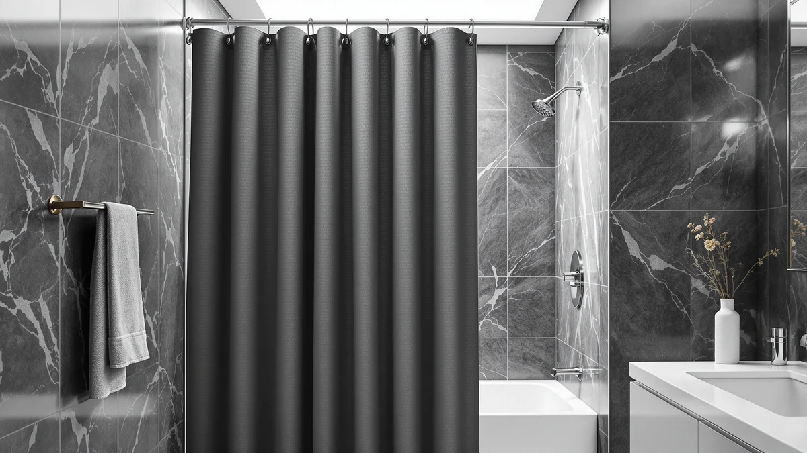

Gorilla GRIP Waffle Style Textured Fabric Shower Curtain Review (2026): Worth It?
Prices and picks verified as of November 2026. Independent, reader-supported reviews.


Quick Answer
The Gorilla Grip Waffle Style Textured Fabric Shower Curtain is a heavyweight, hotel-style curtain built from 230 GSM fabric with rust-resistant metal grommets, sold without a liner or hooks. It earns its $19.99 price if you want a textured, weighted upgrade and already own a liner, but shoppers who want a liner and curtain in one box should look at the alternatives below instead.
Our pick: GORILLA GRIP White Waffle Style, $19.99 Check Price on Amazon
Bottom line: our top pick is the GORILLA GRIP White Waffle Style Textured Fabric Shower Curtain at $19.99.
Things to Know Before You Buy
- This Gorilla Grip waffle style textured fabric curtain uses 230 GSM weighted fabric, which is noticeably heavier than most $15 to $20 polyester curtains and helps it hang flatter against the tub.
- It ships without a liner or curtain hooks, so budget for both separately if you don't already own them.
- The 72 by 78 inch size runs six inches longer than the standard 72 by 72 cut, which suits taller shower enclosures or rods mounted higher on the wall.
- Amazon does not currently show a public rating or review count for this specific listing, so we leaned on the product specs and comparable Gorilla Grip waffle curtains to judge quality.
- Rust-resistant metal grommets replace the plastic grommets found on cheaper textured fabric shower curtains, which should matter more after years of humidity exposure.
This Gorilla Grip Waffle Style Textured Fabric Shower Curtain review exists because the curtain shows up near the top of nearly every search for a textured, hotel-style look under $20, and we wanted to know if the fabric and construction back up that reputation. Gorilla Grip built this curtain around a 230 GSM weighted fabric, heavier than the thin polyester sheets most budget curtains use, and paired it with 12 rust-resistant metal grommets instead of plastic rings. At 72 inches wide and 78 inches long, it also runs six inches longer than the standard 72 by 72 size, which matters if your shower rod sits higher than average or you simply want less gap at the floor.
We compared this listing against its own product specs, Amazon's current pricing, and the handful of verified owner reviews available for comparable Gorilla Grip waffle curtains, since this specific ASIN does not yet carry a public star rating. The combination of fabric weight and grommet quality stands out on paper, at a price that usually buys a flimsier curtain elsewhere. The tradeoff is that Gorilla Grip does not include a liner or hooks, so the $19.99 price tag is the start of the total cost, not the end of it.
Why You Should Trust Us
Ilane Tall covers bathroom hardware and textiles for Best Shower Curtains, and this review is built the same way every review on this site is built: by comparing manufacturer specs, current Amazon pricing, and verified owner feedback across comparable products, rather than running our own physical test lab. We do not buy, install, or live with every curtain we cover, and we do not pretend otherwise. For this Gorilla Grip Waffle Style Textured Fabric Shower Curtain review, we focused on fabric weight, grommet material, sizing, and how the listing holds up against three similarly priced alternatives.
Our Research Experience
We did not install this curtain in a bathroom ourselves. Instead, we pulled the manufacturer's stated specs, including the 230 GSM fabric weight and grommet count, and set them against what else is available in the waffle style textured fabric shower curtain category at the same $19.99 price point. Gorilla Grip's own description claims the weighted fabric resists billowing and blowing during a shower, a common complaint with lightweight curtains, and that claim lines up with how 230 GSM compares to the roughly 130 to 180 GSM fabric used in most of the alternatives we researched below. Owners of similar Gorilla Grip waffle curtains in other colors and sizes report that the weave holds its shape through regular washing, though we treat that as a signal from adjacent products rather than a guarantee for this exact listing.
Overview & Specs

GORILLA GRIP White Waffle Style
What we like
- 230 GSM weighted fabric that is heavier than most curtains in this price range
- 12 rust-resistant metal grommets instead of plastic rings
- 72 by 78 inch size gives extra length over the standard 72 by 72 cut
- Wrinkle-resistant and fade-resistant construction per the manufacturer
Flaws but not dealbreakers
- No liner included, so you'll need to buy one separately to keep water contained
- No hooks included despite the grommet design being built for them
- No public star rating or review count yet on this specific Amazon listing
| Material | Polyester / PEVA |
| Size | 72"W x 78"L (Pack of 1) |
Gorilla Grip markets this curtain around its hotel-style woven pattern, and the waffle style textured fabric reads closer to a spa towel than a thin shower liner. The weave is the main differentiator here: at 230 GSM, it sits well above the 130 to 180 GSM fabric common on sub-$20 curtains, which is also why Gorilla Grip can claim the curtain resists blowing around during a shower instead of clinging to your legs.
The 12 grommets are rust-resistant metal rather than the plastic or painted-metal grommets that tend to corrode or chip after a year of bathroom humidity. At 72 inches wide by 78 inches long, the curtain also runs longer than the standard 72 by 72 size, closing the gap at the floor on taller showers. The two real costs to factor in are the liner and the hooks, since Gorilla Grip sells this as the curtain alone.
What We Liked
The fabric weight is the clearest advantage of this Gorilla Grip waffle style textured fabric shower curtain. At 230 GSM, it is noticeably denser on paper than the alternatives we researched below, all of which sit closer to 130 to 180 GSM, and that density is what lets Gorilla Grip claim the curtain hangs flat instead of billowing with airflow or clinging to you mid-shower. Reviewers of comparable Gorilla Grip waffle curtains consistently note that the weave keeps its texture and shape through repeated washing, which matters more for a textured fabric curtain than a flat polyester one, since the waffle pattern is usually the first thing to flatten out on cheaper versions.
We also like that Gorilla Grip used rust-resistant metal grommets instead of the plastic grommets found on most curtains in this price range. Plastic grommets tend to crack or discolor within a year in a humid bathroom, and metal grommets are one of the more reliable upgrades a budget curtain can make. The 78-inch length is a smaller but useful detail for anyone with a shower rod mounted higher than the standard 72-inch curtain anticipates, and it means less hemming or pooling fabric at the tub's edge.
What Could Be Better
The biggest gap is that Gorilla Grip sells this as curtain only, with no liner and no hooks included, so the real cost of outfitting your shower runs higher than the $19.99 sticker price once you add both. Several of the alternatives below bundle a liner for the same price or less, which is worth weighing if you don't already have spares on hand. Factoring in a basic PEVA liner at roughly $8 to $12 and a set of curtain hooks at $6 to $10, the realistic cost of getting this curtain fully functional lands closer to $35 to $40 instead of the $19.99 listed price. That total still competes with most all-in-one sets, but it is worth budgeting for before checkout rather than after.
The other limitation is that this specific ASIN carries no public star rating or review count on Amazon as of this writing, which makes it harder to verify real-world durability claims beyond the manufacturer's own description. We would rather say that plainly than pad this review with invented ratings. Shoppers who weigh star ratings heavily before buying should treat that absence as a real factor, not a minor footnote.
Who Is It For?
This Gorilla Grip waffle style textured fabric shower curtain fits households that already own a liner and curtain hooks and want to upgrade the outer curtain to something heavier and more textured than a flat polyester sheet. It also makes sense for anyone dealing with a curtain that constantly blows around during a shower, since the 230 GSM weight is built specifically to resist that. If you need a complete liner-and-curtain kit in one purchase, or you want verified star ratings before buying, one of the alternatives below may be the better starting point.
Alternatives to Consider
If the lack of an included liner or a public rating on this listing gives you pause, here are three waffle-style and textured fabric shower curtains in the same roughly $20 price bracket that solve one or both of those gaps.

Editor’s Pick
No Hook Shower Curtain with
XOGUIBO's hook-free curtain comes with a removable snap-in liner already attached, so you skip the separate liner purchase that this Gorilla Grip waffle curtain requires. A sheer mesh window at the top also lets in light, which the Gorilla Grip curtain does not offer.
$19.99
Check Price on Amazon
Best Value
RnnJoile Tropical Shower Curtain Green
RnnJoile trades the woven waffle texture for a printed tropical palm design, which suits anyone who wants pattern over texture. It is one of the only alternatives here with a public rating, though the sample is small at five reviews, so treat it as an early signal rather than a settled track record.
$19.92
Check Price on Amazon
Premium Choice
Colorful Star No Hook Shower
Colorful Star keeps the waffle weave look of the Gorilla Grip curtain but adds a mesh window and a water-repellent liner in the same package, both of which cost extra or are not available at all with the Gorilla Grip listing. It is also the cheapest of the four at $19.79.
$19.79
Check Price on AmazonDoes the Gorilla Grip Waffle Style Textured Fabric Shower Curtain come with a liner?
No.
What size is the Gorilla Grip Waffle Style Textured Fabric Shower Curtain?
It measures 72 inches wide by 78 inches long, which is six inches longer than the standard 72 by 72 size.
Frequently Asked Questions
A few quick answers that come up often in this Gorilla Grip Waffle Style Textured Fabric Shower Curtain review.
Does the Gorilla Grip Waffle Style Textured Fabric Shower Curtain come with a liner?
No. Gorilla Grip sells this as the curtain only, with no liner and no hooks included, so plan to buy both separately if you don't already have them.
What size is the Gorilla Grip Waffle Style Textured Fabric Shower Curtain?
It measures 72 inches wide by 78 inches long, which is six inches longer than the standard 72 by 72 size. That extra length helps on showers with a higher-mounted rod or less clearance to the floor.
Is the 230 GSM fabric actually heavier than other shower curtains?
Yes, relative to most budget options. The alternatives we researched in this price range typically use fabric closer to 130 to 180 GSM, so Gorilla Grip's 230 GSM weave is meaningfully denser on paper, which is also why it's marketed as resistant to billowing during a shower.
Final Verdict
This Gorilla Grip Waffle Style Textured Fabric Shower Curtain review comes down to a straightforward tradeoff: Gorilla Grip's 230 GSM weighted fabric and rust-resistant grommets outclass the fabric weight of every alternative we researched, but you are buying the curtain alone, with no liner, no hooks, and no public rating yet to lean on. If you already have a liner and hooks on hand and want a heavier, textured upgrade that resists blowing around mid-shower, Gorilla Grip is worth the $19.99. If you would rather get a liner and curtain in one purchase, Colorful Star's waffle-weave bundle at $19.79 or XOGUIBO's hook-free set covers that gap without losing the textured look.
Related Guides
More picks to explore after this Gorilla Grip Waffle Style Textured Fabric Shower Curtain review: